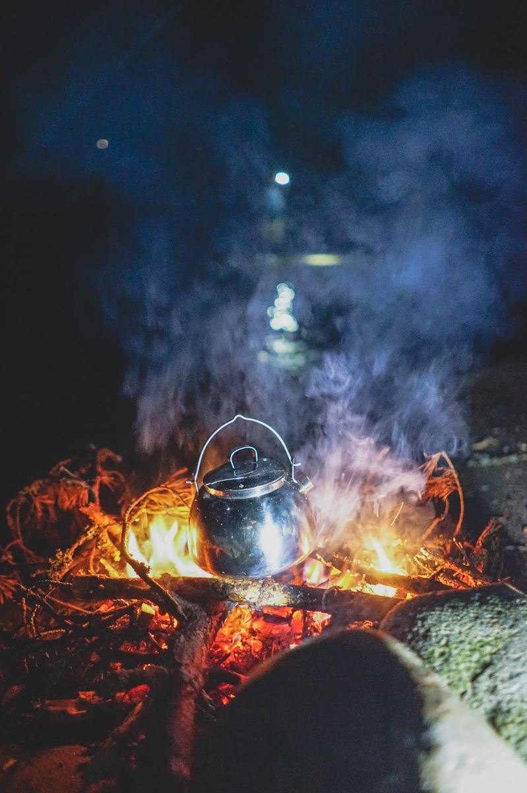
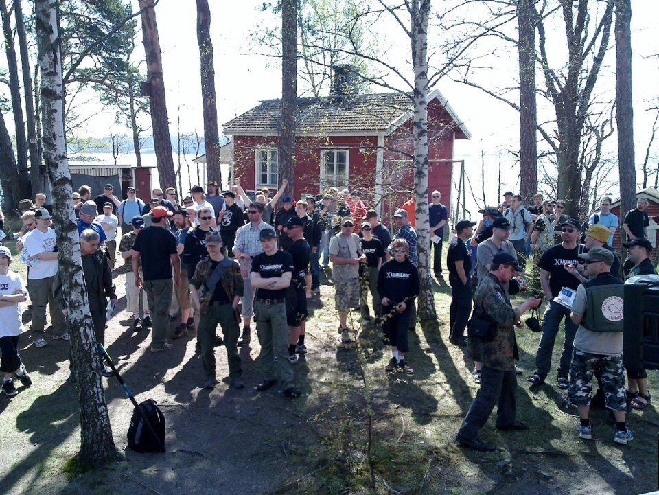
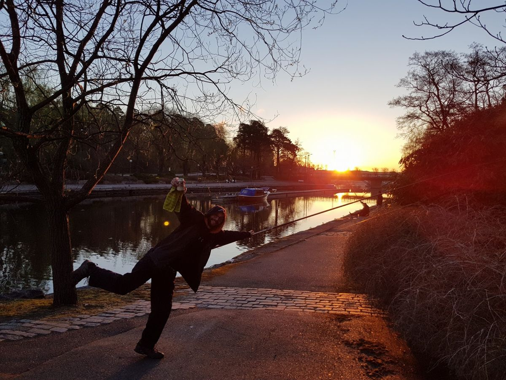
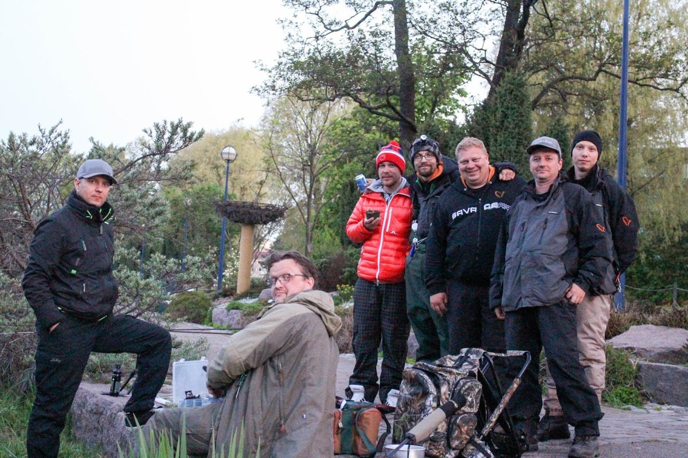
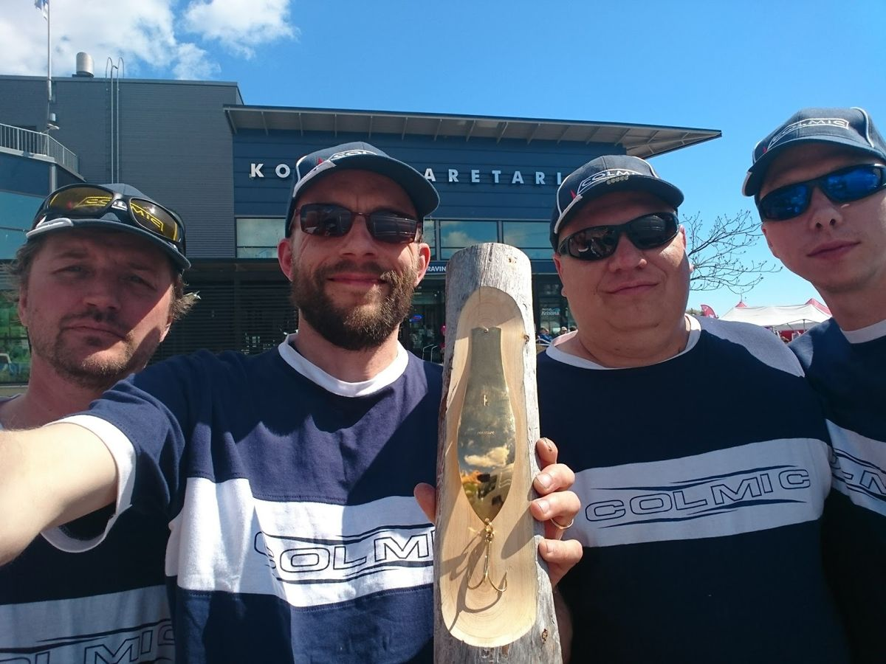
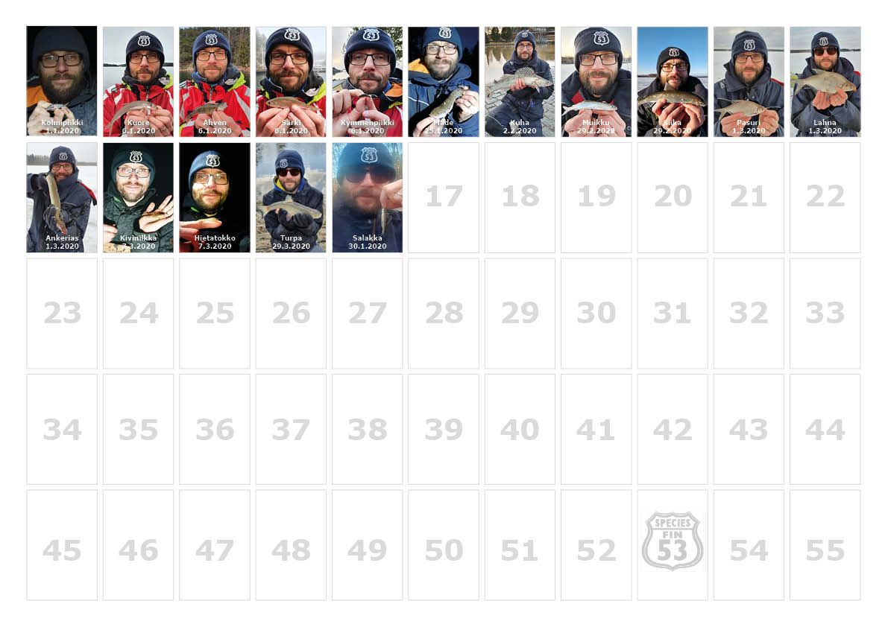

Blogitekstit · Maaliskuu 2020
Maaliskuu - upeita kuvia, kokemuksia ja saakelin pandemia!
Kaupallinen yhteistyö Paitakulman kanssa.

Kalastustunteja kertyi noin 35 tuntia ja sillä saatiin lajeja nousemaan 7 pasuri, lahna, ankerias, kivinilkka, hietatokko, turpa ja salakka pääsivät maaliskuun lajilistalleni.
Lajia Per Reissu (LPR) lukema tasan 2, tehokkuus 92,86ja Suomen ennätyksestä saavutettu 30%.
Tähän kerrottakoot, että lasken kalastustunnit kodista lähtemisen ja kotiin paluun välisen ajan. Todellisuudessa varsinaisia kalanpyyntitunteja on huomattavasti vähemmän kuin mitä edellä mainittu.
Pandemia leviää - Suomi kiinni


Ennen pahimman korona-virusepidemiahysteerian alkamista käytiin Atte Sakarin (@atte_sakari), Miika Kovasen ja Petri Tynkkysen kanssa Padvan-niemellä. Mitä lajeja tuolta tunnelmalliselta reissulta nousi saat selville tästä.
Kuka tunsi Coronan ennen vuotta 2020? Corona oli tuttu vain limepalasen alta oluen muodossa. Tätä kirjoittaessa maaliskuun puoliväli lähenee ja olen tehnyt koko päivän etätöitä kotitoimistolta. Kovaa kolahti koronavirus Suomeen, ensiksi 1 tartunta, nyt tartuntoja on 150 kpl ympäri Suomen, päivää myöhemmin luku pomppasi yli 200.
Ihmiset varautuvat pahimpaan, kauppojen hyllyiltä häviää wc-paperi, säilykkeet ja muut pitkään säilyvät ruoat. Eniten huolta aiheuttaa omassa lähipiirissä riskiryhmään kuuluvien tilanne ja vointi.


KHL loppui, unelma pari Jokerit - Pietarin SKA jäi pelaamatta. Liiga loppui, NBA, NHL, puulaakisarjojen ottelut, tilaisuuksia ja tapahtumia perutaan. Taistelu pandemiaa vastaan on yhteinen, omalta kohdalta muutama Longinojaan liittyvä tapahtuma jää toteutumatta tämän johdosta, pahimpana pelkona on vuoden kohokohtien Kalamaratonien peruuntuminen taudin takia.


Rakas blogini lukija, on maaliskuun 16. päivä. Suomen päämisteri Sanna Marin on ilmoittanut, että Suomi menee kiinni. Lista suljettavista julkisista tiloista oli pitkä kuin nälkävuosi. Nyt viimeistään tuntuu pahalta ja pelko kasvaa ettei Kalamaratonit olekaan kalenterissa toukokuussa.
Tärkeintä on meidän jokaisen terveys ja taudin leviämisen hidastaminen. Jos Kalamaraton peruuntuu on se monelle kevään pahimpia pettymyksiä, unohdetaan kuitenkin tämä pettymys ja toivotaan pandemian nopeaan talttumiseen.
Maanantai 23.3.2020 kalareissu Kymijoelle lohi -ja taimenjahtiin lähenee. Päätin vähentää tartuntariskiä ja painaa Kotkaan omalla autolla, samalla voin jäädä illaksi rannalle lirkkimään ja etsimään muutamia puuttuvia yölajeja. Tuleeko tänään lisää kieltoja, saako kohta liikkua ulkona ollenkaan?
Keskiviikko 25.3.2020 eilen alkoi mediassa puheet Uudenmaan alueen karanteeniin laittamisesta ja liikkumisen rajoittamisesta alueelta ulos. Pidempi rajoittaminen tiputtaisi todennäköisesti lajilistalta pois useamman lajin.
Perjantai 27.3.2020 raja suljettiin, samalla sulkeutui Kymijoelle pääsy.
Pahimpaan pettymyksen lievittämiseksi voit lukea vanhoja Kalamaraton postauksia tästä. Kannattaa myös muistaa Kalakerho Siloneulan Kalamaraton -dokumentti sekä Urpoerämiesten Kalamarton-videot.


Kalamaraton on enemmän kuin kilpailu, se on elämäntapa!
Raskain sydämin totean omalta kohdaltani seuraavaa; Tilanne näyttää pandemian osalta niin pahalta eikä sen loppuminen ennen Kalamaratoneja näytä todennäköiseltä, että en odota järjestäjien päätöstä.
Olen luopunut toivosta toukokuun osalta. Parempi kestää tämä pettymys ja unohtaa tämän alkuvuoden kohokohdan odottaminen.


Mieli halasi kuitenkin kalalle. Päätin ottaa suunnaksi Mustionjoen tutun suvannon ja sielä lyhyävät turvat sekä muut särkikalat. Lähi Alepasta nakkipaketti ja olut reppuun ja matkalle kohti Pornaista. Mukaan reissulle tuli myös Timi poikansa Ahdin kanssa ja aikaisemmin jo madereissulla joella mukana ollut Osku.
Näin "karanteeniaikaan" pidimme sopivan hajuraon toisistamme rupatellan mukavia odotellessa kilikellon kilahdusta. Lue kuinka tuolla reissulla kävi.
Kuukauden viimeinen reissu oli pikavisiitti koiranulkoilutus-kauppareissu jolle lähti mukaan perheeni. Pysähdys, kävely onkipaikalle, tiputus ja nosto. Salakka lajilistalle.


Kyllä tämä tästä ohi menee ja päästään palaamaan normaaliin aikaan. Yhdessä - yksin tästä selvitään.
Maaliskuun retkistatistiikka
- lajeja kasassa 16 | reissuja 5 | tunteja noin 40 | kilometrejä 1278
Facebookin Lajikalastus 2020 listaus
20 lajia, Miika Kovanen, 16 lajia, Juuso Triipponen, 15 lajia, Juha Salonen, 13 lajia, Justus Kamppinen, 13 lajia, Henri Lillman, 10 lajia, Olli Salonen, 9 lajia, Petri Ristola, 8 lajia, Joonas Orupold, 6 lajia, Ari Meskanen, 7 lajia, Vili Lillman, 6 lajia, Aleksi Aaltonen, 5 lajia, Wesa Karsikas, 5 lajia, Matti Kimonen, 4 lajia, Niko Huovila, 3 lajia, Harri Pylväläinen, 2 lajia, Venla Lillman, 2 lajia, Vesa Sivonen, 1 lajia, Olli Varhimo, 1 lajia, Patrik Lauha
Huhtikuu edessä. Lajilista koostuu pääosin stadin lajeista...
Seuraa ennätyksen etenemistä
Pidän kirjaa lajilistasta ja tarkemmasta retkidatasta Google -taulukossa, joka löytyy jokaisesta ennätysyrityksen postauksesta. Tästä linkistä taulukko avautuu uuteen ikkunaan.
Seurantatilanne löytyy myös blogini oikeasta yläreunasta.
Vuoden aikana ennätysyrityksessä kulkee mukaan myös tämä kalataitelija-graaffikko Sakke Yrjölän suunnittelema SPECIES FIN 53 -merkki.
Paitakulmassa painatin pipoon ja lippikseen saman merkin. Tavoitteeni on saada aikaiseksi 53 saaliskuvaa tekstin alussa tekemääni taulukkoon joissa kaikissa kuvissa näkyisi tuo kyseinen tunnus.
Paitakulma on Suomalainen perheyritys, joka haluaa panostaa laatuun ja asiakastyytyväisyyteen. Tutustu yrityksen palveluihin tästä.
2020 ankerias COVID-19 kalamaraton Kalastajan Kymijoki korona Kymijoki lapinlahti Miikka Pulliainen muikku siika SpeciesFIN53 yhteenveto 2020